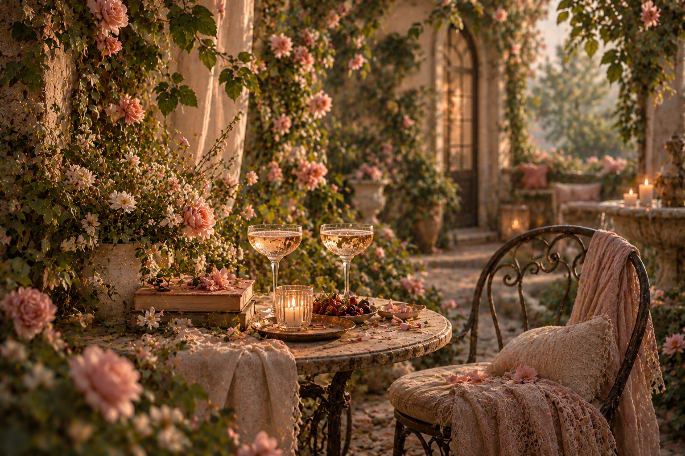

Tankemylder
Når tankerne fylder lidt for meget. Læs om overtænkning, bekymringer, angst og alt det, der kan være svært at give slip på.
Udforsk kategorienUDFORSK BLOOM WITHIN
Nogle dage har vi brug for svar. Andre dage har vi bare brug for at føle os forstået. Her finder du fortællinger, refleksioner og inspiration til det, der fylder i livet. Udforsk det, der giver mening for dig.
FIND DIN VEJ
Når tankerne fylder lidt for meget. Læs om overtænkning, bekymringer, angst og alt det, der kan være svært at give slip på.
Udforsk kategorienAt lære sig selv at kende i sit eget tempo. Om identitet, selvværd, følelser, grænser og selvaccept.
Udforsk kategorienForandring behøver ikke ske på én dag. Find små guides, hverdagsråd og inspiration til at skabe mere ro og overskud.
Udforsk kategorienÆrlige historier fra virkeligheden. Om de svære dage, de gode øjeblikke og alt det, vi oplever undervejs.
Udforsk kategorienNår verden omkring os påvirker, hvordan vi har det. Om forventninger, præstationspres, sociale medier, normer og tabuer.
Udforsk kategorienRelationer, fællesskaber og følelsen af at høre til. Om venskaber, ensomhed, sociale situationer og det at finde sin plads.
Udforsk kategorienDu er så meget mere end det, du lever med. Udforsk viden og erfaringer om psykiske og fysiske diagnoser, funktionsnedsættelser og livet med dem.
Udforsk kategorien
Relationer, nærhed og alt det midt imellem. Udforsk kærlighed, dating, seksualitet, intimitet og de forventninger, der kan følge med. Et sted til refleksioner om egne grænser, behov og relationer.
Udforsk kategorien